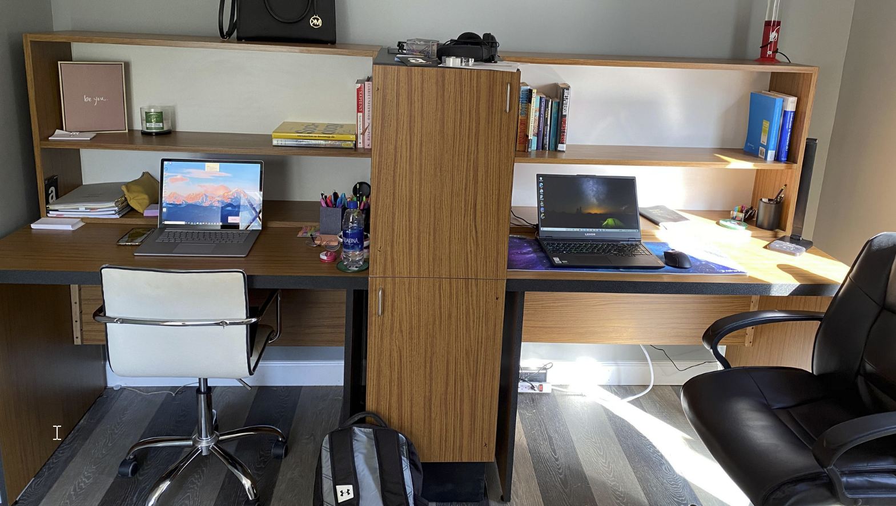
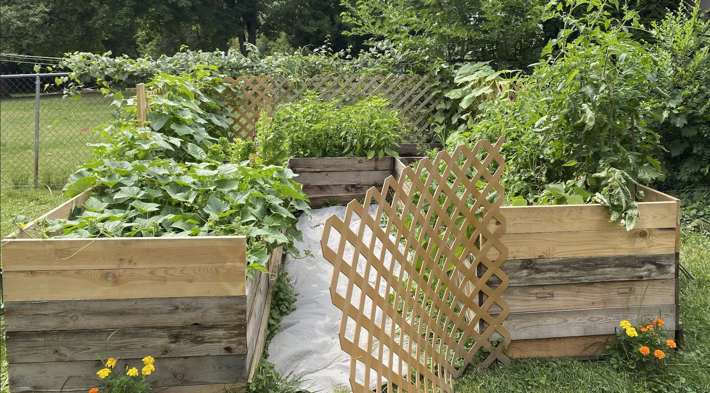
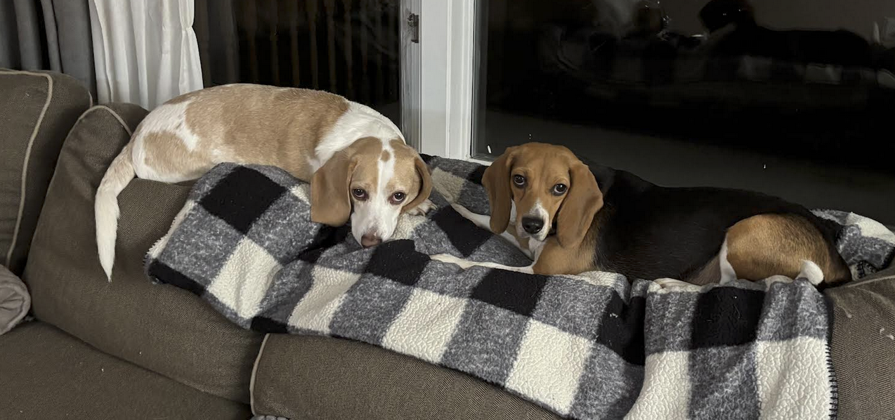
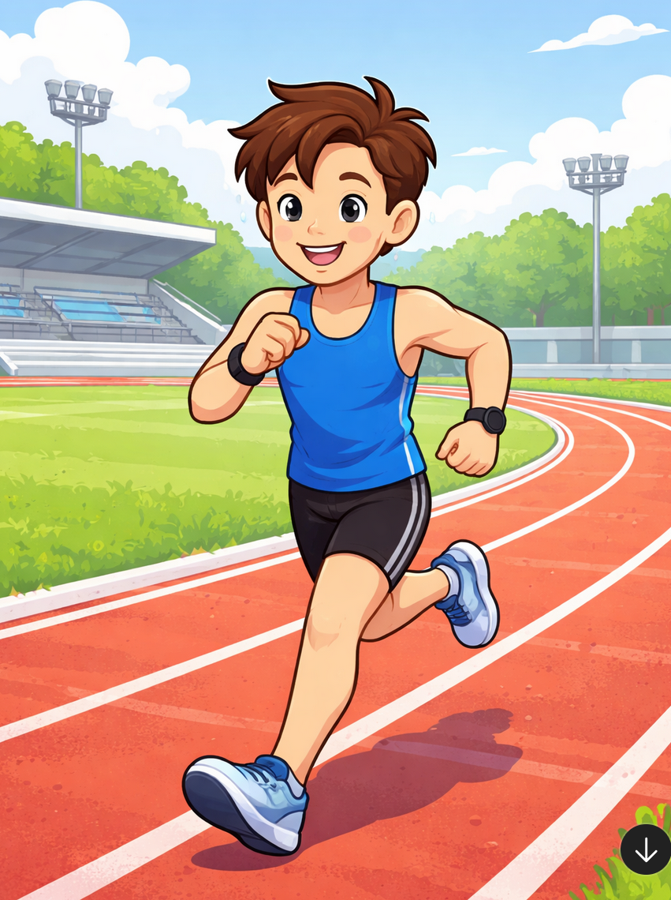

Hobbies & Interest
- Home lab: Using old hardware I enjoy loading different Linux Distros and using the machines to serve various roles. Such as NAS, hotspots, web server, etc.

- Reading: I enjoy reading a variety of books but my favorite would be WWII books and distopian fiction books.
- Wood working: I enjoy building custom furniture such as closets, desks, and bed frames for my dogs.

- Gardening: I also enjoy gardening and growing vegetables in our backyard. I grow onions, tomatoes, zuccinni, hot peppers, garlic, cucumbers, etc. Using the vegetables we make our own pickles and salsa every year.

- Dogs: I love spending time with my two beagles Tito and Skye. They are both rescues and love to play outside and chase rabbits.

- Exercise:I enjoy going to the gym and working out. I am currently training for my first competition this year (hyrox).
